A/T - Cooler Line Flushing Procedures
Bulletin No: 05-008/11Last Issued: 09/21/2011
Subject:
AUTOMATIC TRANS MISSION/TRANSAXLE COOLER AND LINES FLUSHING
PROCEDURE
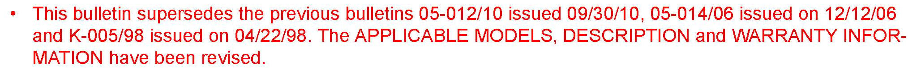
BULLETIN NOTE
Changes are noted in Red, change bars or asterisks.
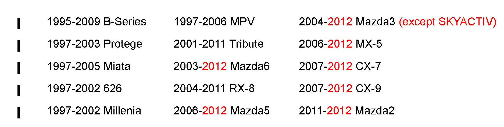
APPLICABLE MODEL(S)/VINS
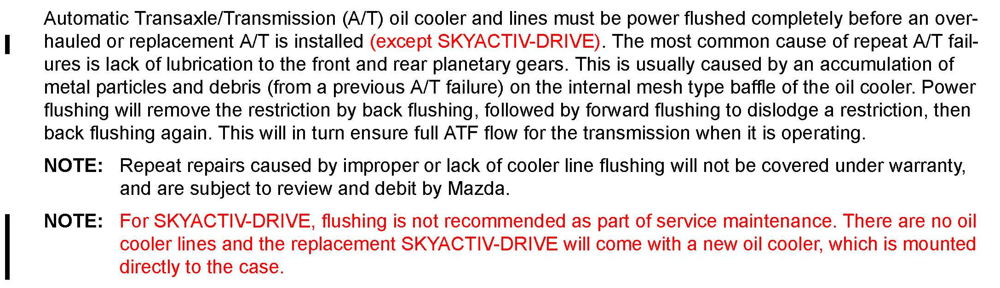
DESCRIPTION
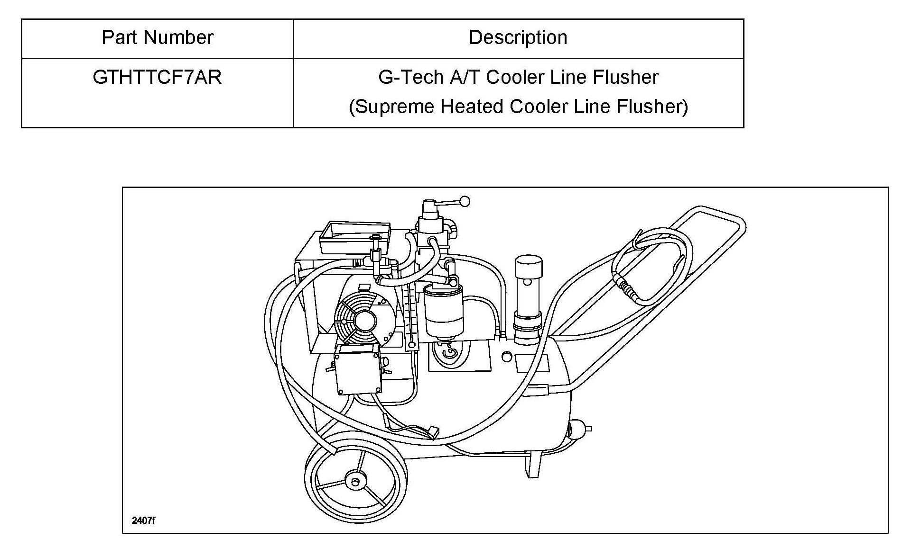
Mazda Required Tool (MRT) Power Flushing Equipment
REPAIR PROCEDURE
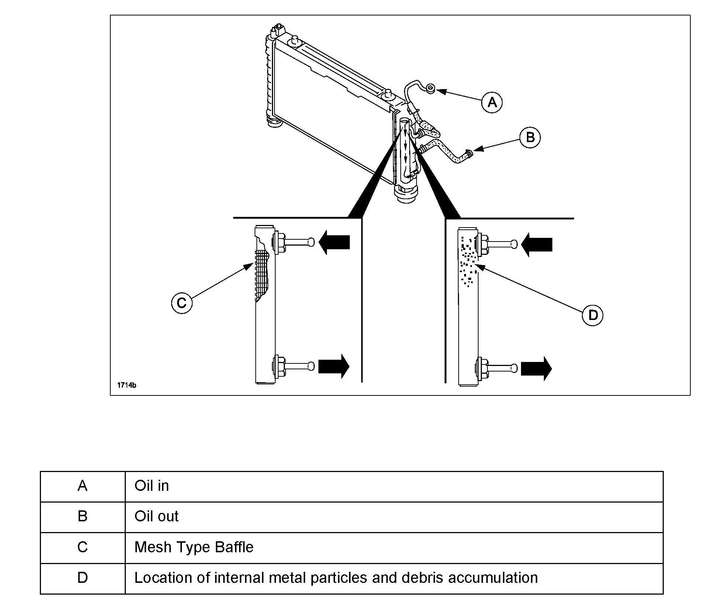
Before power flushing, inspect the hoses/lines and clamps on the vehicle. Repair or replace as necessary. Power flushing must begin with back flushing, followed by forward flushing to dislodge a restriction, then back flushing again. If back flushing is not performed before forward flushing, the restriction could further reduce the automatic transmission fluid (ATF) flow through the internal mesh type baffle (C) of the cooler and flushing will not be effective or possible.
If the cooler is not properly flushed, oil flow from the cooler to the transmission will not be enough to lubricate the transmission. The most common cause of repeat transmission failure is lack of lubrication to the front and rear planetary gears.
Inspecting Oil Lines & Clamps
Be sure to inspect the vehicle transmission lines (hoses/pipes) for cuts, crimps (pinched), cracks or any other damage before reusing them. If any problem exists or the hose comes off when applying oil pressure, replace it.
CAUTION:
Always use new clamps when replacing hoses.
FLUSHING PROCEDURE
CAUTION:
The G-Tech flushing unit uses hot fluid under pressure. Inspect all flushing unit hoses and connections before operation. Always wear safety glasses, gloves, and protective clothing. If ATF accidentally gets in your eyes or skin, rinse with water immediately.
WARNING:
Improper use of this flushing unit can result in burns and other serious injuries. Always wear eye protection and protective clothing and follow all instructions in the manufacturers booklet.
NOTE:
^ For best results, perform a back flush, forward flush, and back flush as outlined.
^ Be sure to follow these instructions carefully when performing the flushing procedure.
^ Depending on the production date, some flushing units may not come equipped with certain options. If not, please disregard that step.
^ Refer to Appendix for flushing unit illustration and component names where "callout" numbers are indicated.
(STEP A - SETUP)
1. Plug both power lines (if equipped), of the flushing unit directly into a 110V (15 amp) grounded electrical outlet.
ATTENTION - Make sure the following:
^ NEVER plug the heater and motor cords into a wall outlet that has anything else plugged into it.
^ NEVER plug the heater and/or motor cord into an extension cord.
^ ALWAYS place the fluid purge hose in an EPA-approved oil waste container before operating the flusher to prevent fluid spills.
^ Before starting or engaging the motor for flushing and purging, be certain that the ATF in the tank has reached about 120F.
^ NEVER raise the shop air psi higher than 125 as this will cause damage to the motor, pump, and/or the vehicle's cooling system.
^ Do NOT use mineral spirits, solvents, or any volatile liquid in the flusher!
2. Add 8 gallons of ATF to the flushing unit tank.
3. Always turn the heater switch (callout 3) to the On position first. The green light will come on. If the red light is lit, then the tank is low on fluid and there will be NO power to the heater. The ATF recommended maximum amount is eight (8) gallons. Do NOT overfill the tank. Allow approximately 15 minutes for the flushing unit to reach operating temperature of above 120 Fahrenheit using the unit's thermometer (callout # 15).
CAUTION:
On previous flushing units, the heater may be adjustable. However, doing so is solely at the risk and responsibility of the operator. On current flushing units, the heater is NOT adjustable. Factory setting of the heater is 150-160 Fahrenheit.
4. Install the appropriate quick disconnect line adaptors to the ATF cooler inlet and outlet lines using any of the three methods in Figure below (radiator (A), hose (B), or banjo bolt (C)). Connect the red pressure hose to the cooler inlet line (E). Connect the blue return hose to the cooler outlet line (D) (the line coming from the vehicle's cooler tank going to the transmission).
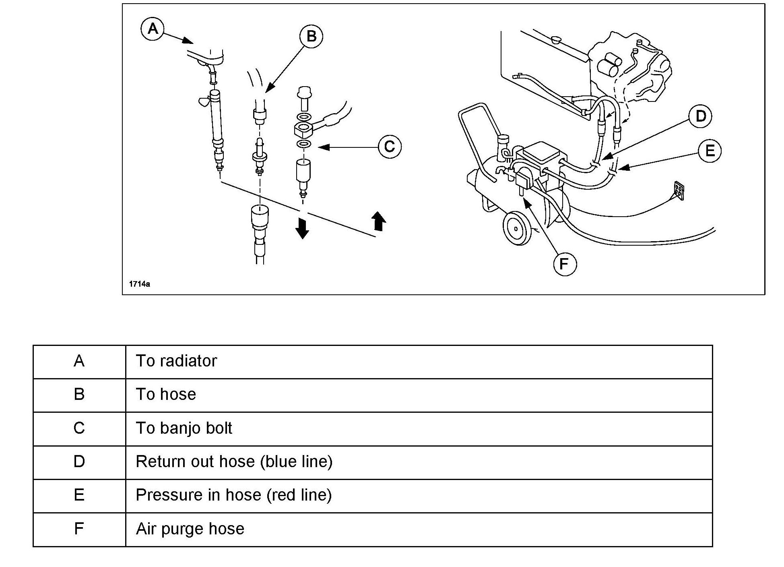
Three ways to attach the flusher to the vehicle:
5. Connect a shop air hose (C) (less than 125 psi) to the air purge valve (D) (callout # 20) as shown.
NOTE:
The quick connect fitting on the air purge valve has a one-way check valve to keep ATF from entering your shop's air system. Do NOT remove or replace this fitting. Attach the coupler provided with the flushing unit to your air shop line if your coupler is not compatible.
6. Secure the end of the fluid purge hose (blue short hose with open end) into an EPA-approved waste container. ATTENTION - The pressure is very high and purging takes only a few seconds. Be sure to adequately secure the short hose into a container to prevent spills.
7. Turn the fluid purge valve handle (callout # 6) 50 that the needle points toward the fluid purge hose (the purge" position). Turn the motor switch ON (callout # 3) and purge the dirty fluid. Allow the fluid to flow until fluid turns clear. Then turn the motor switch off. The amount of purge will vary based on each vehicle and when the fluid turns clear. This amount will average between one pint and one quart. Always turn the fluid purge handle (callout #6) to the flush position (the needle faces toward the filters) after each purge.
8. Replenish ATF to the flushing unit's tank, if the low fluid indicator (red) light (callout #3) comes On after purging.
(STEP B - BACK FLUSH)
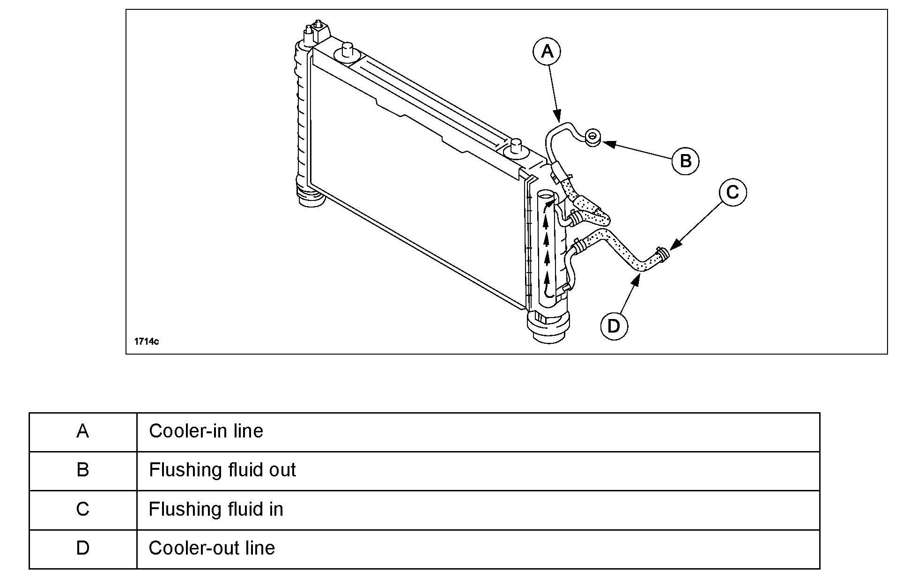
9. The best method for flushing is to back-flush the cooler first. If possible to back-flush the cooler (see note), set the reverse lever (callout # 21) to the 2" position. If not possible, set the lever to the 1" position for forward-flush.
NOTE:
^ Some coolers cannot be back-flushed due to a directional check valve that makes back-flushing impossible. In some circumstances, it is possible to temporarily remove the check valve which will allow back-flushing of the system. Be sure to re-install the check valve.
^ If there is a one way check valve in the line, the flow forward on a clear system will be above 4 gpm and in the back-flushing position zero (0) gpm. The pressure release valve will open and all fluid will go from the pump back into the tank. The flow meter will read zero (0) gpm.
^ When the reverse lever is set to position 1" the fluid flows from the red hose into the cooler. The red hose is the pressure" line and the blue hose is the return" line.
^ When the reverse lever is set to position 2" the fluid reverses and flows from the blue hose into the cooler. The blue hose is the pressure" line and the red hose is the return" line.
10. Turn the motor switch ON. Let the flushing unit back flush for 15 minutes. Regulate the air supply to 90-100 psi. Also verify the flow meter (callout # 9) reads a minimum 3-4 gallons per minute (gpm) for proper flow.
11. While the flushing unit is running, open the air purge valve (callout # 20) for 10-15 seconds to cause agitation and improve the flushing process. Then close the air purge valve for 5 minutes. Repeat the opening and closing three (3) times.
12. Turn the motor switch OFF.
(STEP C - FORWARD FLUSH)
13. To change flow of the cleaning process for forward flushing, turn the reverse lever (callout # 21) to the opposite setting, ie: position 1". Turn the motor switch ON and let the flushing unit forward flush for 5 minutes. Regulate the air supply to 90-100 psi. Also verify the flow meter (callout # 9) reads a minimum 3-4 gpm for proper flow. While the flushing unit is running, open the air purge valve (callout # 20) for 10-15 seconds to cause agitation and improve the flushing process. Then close the air purge valve.
14. Turn the motor switch OFF, leaving the air purge valve open for at least 15 seconds to purge the lines of residual ATF. Close the air purge valve.
(STEP D - BACK FLUSH)
15. To change flow of the cleaning process for back flushing, turn the reverse lever (callout # 21) to the opposite setting, ie: position 2". Turn the motor switch ON and let the flushing unit back flush for 15 minutes. Regulate the air supply to 90-100 psi. Also verify the flow meter (callout # 9) reads a minimum 3-4 gpm for proper flow. While the flushing unit is running, open the air purge valve (callout # 20) for 10-15 seconds to cause agitation and improve the flushing process. Then close the air purge valve for 5 minutes. Repeat the opening and closing three (3) times.
16. Turn the motor switch OFF, leaving the air purge valve open for at least 15 seconds to purge the lines of residual ATF. Close the air purge valve.
(STEP E - VERIFY FLUSH)
17. Remove the bypass (left side) spin-on filter and install a filter screen on top of the filter. Reinstall the bypass filter back onto the flushing unit. Turn the motor switch ON and back-flush for 5 minutes. Turn the motor switch OFF.
18. Turn the air purge valve to the purge position to purge the lines and filters Of ATF.
19. Remove the bypass spin-on filter and visually check the filter screen.
a. If debris is present in the filter screen, remove filter screen and flush vehicle again by repeating Steps B - D.
b. If no debris is present, remove filter screen and re-install the bypass filter. Turn the heater switch OFF.
NOTE:
If the vehicle was flushed completely and properly but debris is still present in the filter screens, check these areas:
^ Non-bypass (NBP) spin-on filter for damage or pollution.
^ Severe contamination of the holding tank and/or flushing unit hoses.
20. Turn the motor and heater toggle switches OFF and disconnect the pressure and return hoses from the vehicle cooler lines.
^ Never leave the heater on overnight.
21. Install the test coupling (provided with your adaptor kit) to connect the pressure and return hoses to each other for storage.
22. Unplug the flushing unit from the wall outlet.
23. Flushing is now complete.
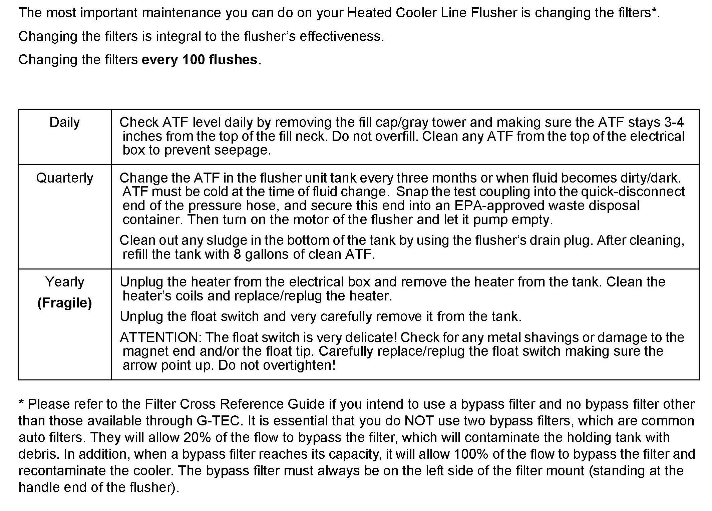
MAINTENANCE
TROUBLESHOOTING
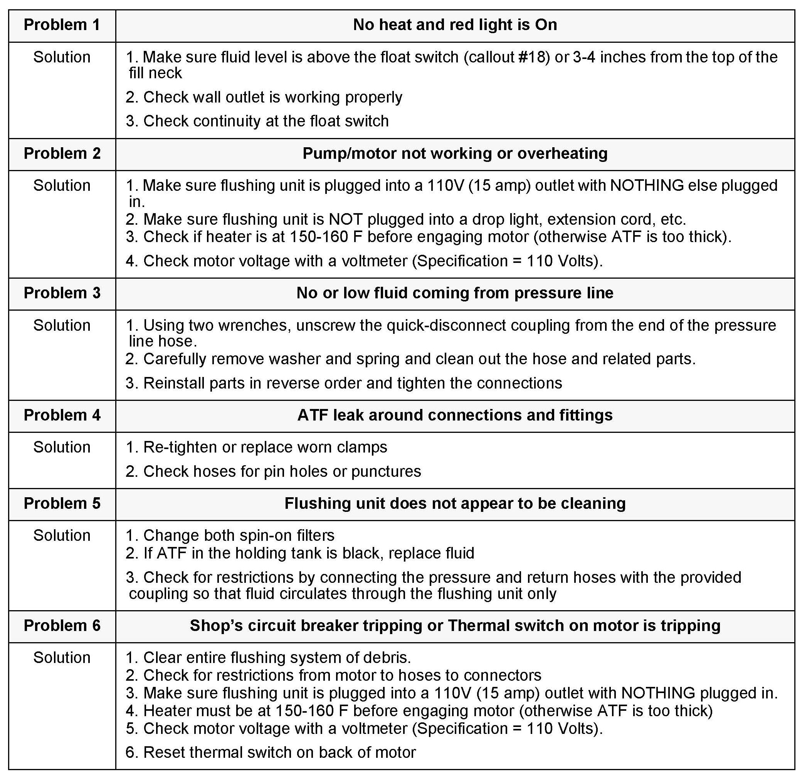
CAUTION:
Always unplug the flushing unit before any troubleshooting.
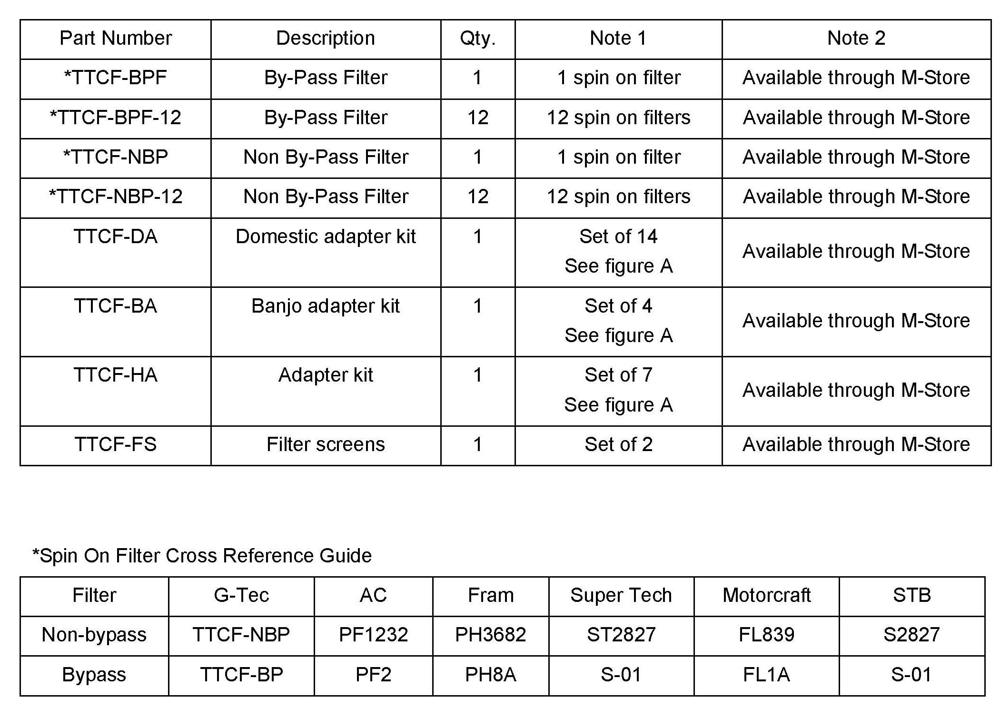
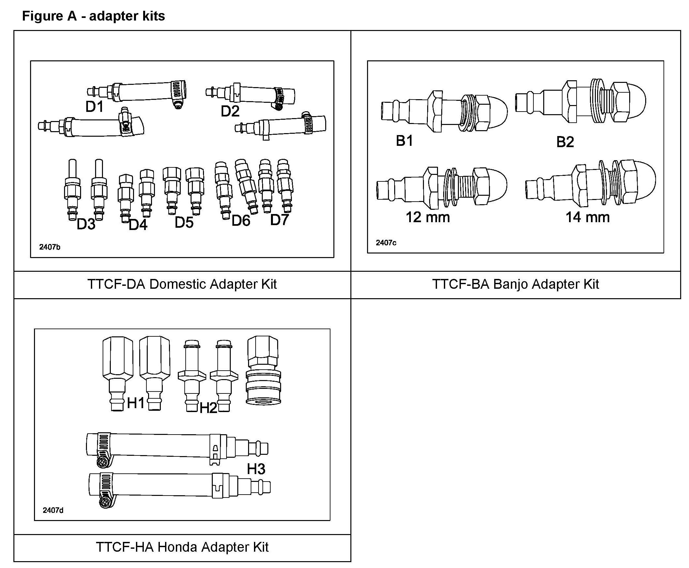
PART(S) INFORMATION
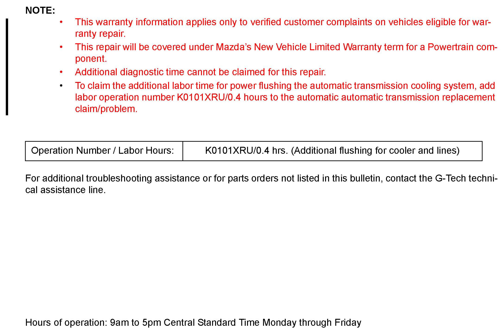
WARRANTY INFORMATION
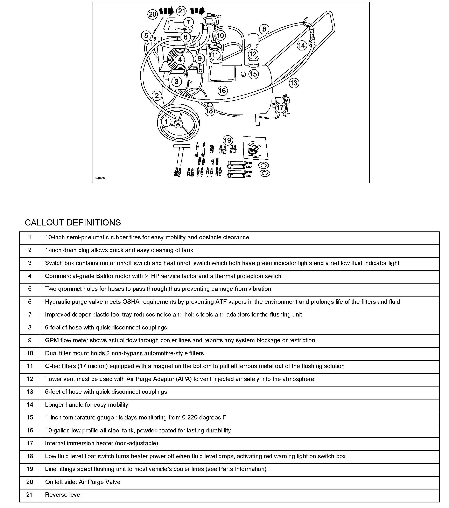
APPENDIX

Disclaimer